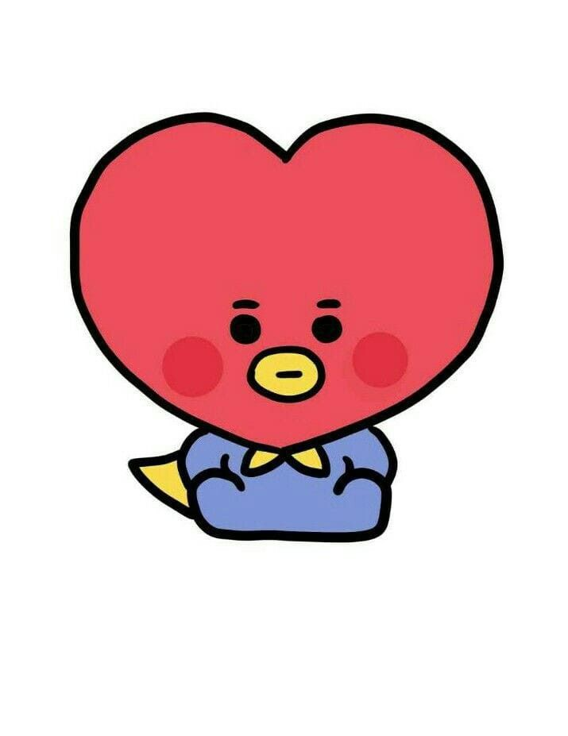
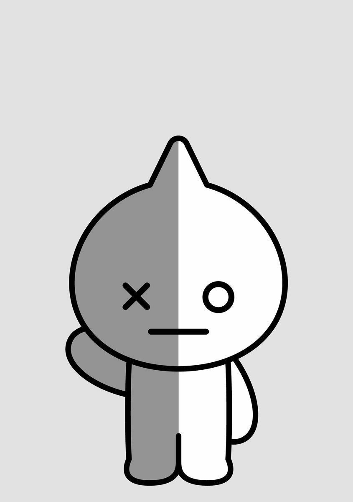

VAN foi inspirado por entrevistas com o BTS sobre o tipo de personagens que eles queriam criar com a LINE. O nome do grupo, BT21, foi inspirado por um comentário do SUGA, que achou que os personagens deveriam representar tanto o BTS como o século 21, então eles viveriam pelos próximos 100 anos.
A história dos BT21 é que eles são um grupo de ídolos wannabe. O alienígena sempre curioso Tata deixou seu planeta natal com VAN, e viu o BTS ao visitar a Terra. Impressionado por sua popularidade, ele se inspirou para montar seu próprio grupo rival. Ele convocou os outros integrantes para formar seu grupo de ídolos perfeito.
Após o lançamento oficial na LINE em outubro passado, os stickers com os personagens da BT21 foram baixados mais de 8 milhões de vezes.
Logo depois, eles lançaram uma grande linha de produtos, incluindo uma colaboração com a Converse, que é vendida em todas as lojas coreanas da LINE Friends. Muitos itens são limitados ou edições sazonais.
Lojas especiais da BT21 e cafés temáticos foram abertos em toda a Ásia nos últimos 12 meses, e eles também chegaram à América, com lojas pop-up abertas recentemente, em Nova Iorque e Los Angeles. Junto com os stickers exclusivos, porta-copos e pôsteres, os cafés da BT21 têm em seu menu itens diferenciados em cada país e cidade.
O RM decidiu criar um personagem em forma de coala porque, para ele, esse é um animal que é a expressão da fofura. Koya é um coala carinhoso e talentoso que está sempre com sono. Ele é inteligente e pensa demais, especialmente sobre suas sonecas.
Já RJ é uma alpaca que adora cozinhar e comer. Sua pelagem macia e coração quente fazem com que todos se sintam em casa ao seu lado. Jin disse já ter esse desenho há alguns anos e os demais integrantes do grupo disseram que ele realmente se parece com uma alpaca (principalmente quando come).
Durante os esboços para o BT21, Suga fez vários desenhos inspirados em seu cachorrinho Holly que resultaram no pequeno Shooky. Shooky é um biscoito brincalhão que adora fazer e ouvir piadas, especialmente as de seus amigos. Mas há algo que ele não suporta: leite.
Quando está dançando, Mang parece mais legal do que nunca. Mas sua verdadeira identidade permaneceu em segredo escondida por trás de uma máscara de pônei por alguns anos, até ser revelada em abril de 2023. O desenho de seu nariz tem o formato de um coração da mesma forma que os lábios de J-Hope quando ele sorri.
Jimin considera esse o personagem que melhor representa o espírito do BTS. Em sua invenção, Chimmy é um cachorrinho que gosta de usar um moletom amarelo e que nasceu com a paixão necessária para trabalhar duro, não importa o que aconteça.

O príncipe Tata, que é um alienígena do planeta BT, tem o corpo superelástico e poderes sobrenaturais. O V também disse que desenha esse personagem há um bom tempo, então foi fácil reproduzí-lo para o BT21.
Jungkook é conhecido por seus treinos na academia e, portanto, seu personagem tomou o mesmo rumo. Cooky é um coelho cor-de-rosa que espera romper com os estereótipos de sua aparência angelical e tornar-se um cara forte.
E, por fim, o personagem Van que é um robô que parece saber tudo sobre o mundo e que quer proteger o BT21. Ele representa o fandom do BTS, army, e foi desenvolvido pela equipe de designers do Line Friends.
Assim fica fácil entender o porquê de tamanho carinho por essa marca. Sua história e estilo adoráveis, unidos a uma ligação mais do que especial com o BTS, faz do BT21 um sucesso indiscutível.


.png)

.jpeg)